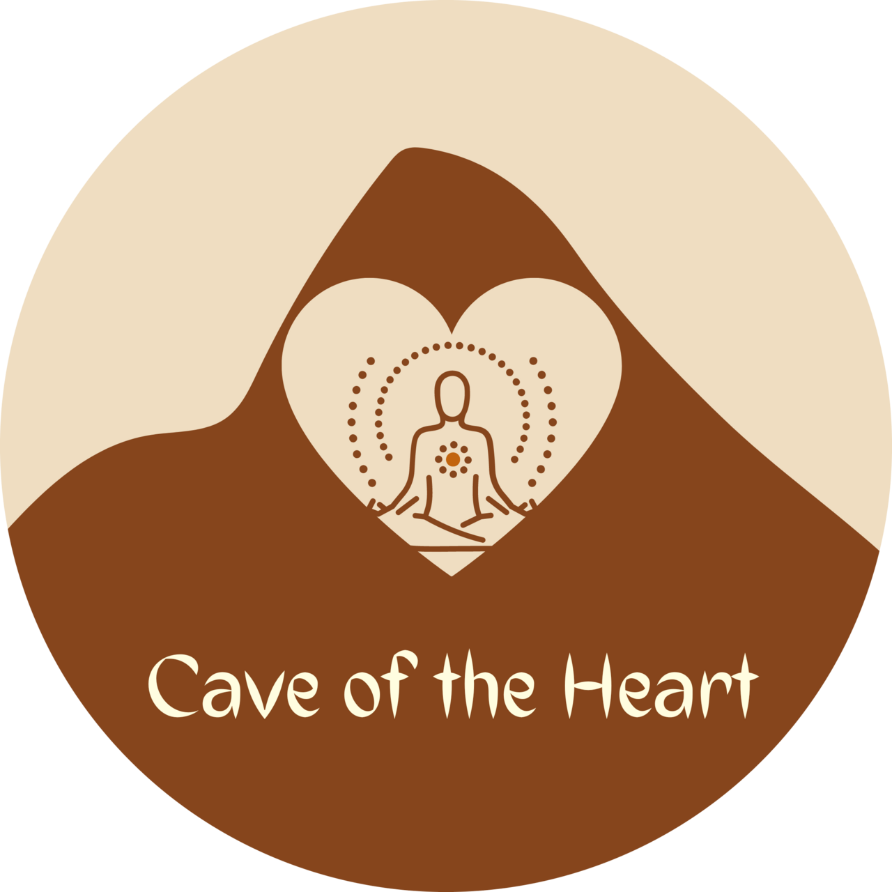

Saturday, December 2, 2026
Ten hours, held loosely. Nothing is rushed. If a session runs long because the group needs the quiet, we let it.
- Arrival & tea — settle in, find your mat space, warm your hands around a cup.
- Opening silence begins — a short instruction on note-passing for logistics only, then we stop speaking.
- Gentle vinyasa — a slow, breath-led practice to loosen the body after travel.
- Walking meditation in the grove — a barefoot-optional walk beneath the redwoods.
- Silent lunch (provided, vegetarian) — eaten together, without talking.
- Restorative yoga — supported poses, blankets and bolsters provided.
- Free silent time / journaling — rest, write, or sit with the grove on your own.
- Closing circle — silence lifts, and we speak again, gently, if we choose to.
- Tea & optional sharing.
- Depart.

Photo: Cave of the Heart Retreats / Wikimedia Commons (CC BY-SA 4.0)